How to use this page
This is not a second study guide. It is a record of what Professor Webster told the class to study for Exam 3, on 13 November 2026, at the end of the DNA Viruses lecture. It begins in the last minute of part 2 of that day’s recording — “Do you want to break before I start your review, or do you want me to just plunge into the review? … I will plunge. If you want to get out where you have your learning objectives, we’re going to review” [part 2, 55:10–55:18] — and runs through all of part 3 (32 minutes): about 15 minutes on Lecture 14, 14 on Lecture 17 and 3 on Lecture 18. She walked her three Exam 3 lectures in order: the Gram-negative bacilli organism by organism, the parasites organism by organism, and DNA viruses as a closing list of what to know.
Each item carries her words and then the answer from the slides, cited to the slide. The time in brackets says where her words are in the recording: [part 3, 7:31] is seven and a half minutes into part 3. Her words come from one transcript (ours; no Notability transcript exists for this recording), so a misheard word is possible and is corrected in brackets where it matters. The recording only decides the weighting. Every fact comes from the slides — the visible text and pictures, never the speaker notes — and where what she said differs from a slide, the page says so and teaches the slide.
| Tier | What it means |
|---|---|
| Know cold | She asked the class to answer it, drilled it, or said “need to know” or “should know” |
| Know it | She walked it without singling it out |
| Light touch | She said not to worry about it |
For the parasites she said it twice: “if I showed you a picture of them, it’s possible that you could need to identify the picture” [part 3, 15:10–15:16], and at the end, “if I give you a picture, be able to recognize it” [part 3, 28:52]. The deck’s pictures are on this page next to each organism; the one she named directly is the ring form inside red blood cells (item 2.9), and she reminded the class of the Trichomonas picture (item 2.5).
Scope. She reviewed only the three lectures she taught — Lecture 14 (Gram-Negative Bacilli of Medical Importance), Lecture 17 (Parasites of Medical Importance) and Lecture 18 (DNA Viruses of Medical Importance). Exam 3, on Wednesday 2 December 2026, covers Lectures 14–19, so Dr. Fair’s lectures are examinable and are not on this page: Lecture 15 (Fungi of Medical Importance), Lecture 16 (Food Safety) and Lecture 19 (RNA Viruses, 20 November). Use the full Exam 3 study guide and the cram sheet for those.
Parts of her lectures she did not mention are still on the syllabus list: in Lecture 17, the intestinal roundworms Ascaris, Trichuris, the hookworm Necator and Strongyloides, the rat lungworm Angiostrongylus, the filarial worms Wuchereria and Onchocerca, and the flukes Fasciola and Paragonimus. In Lecture 18 she named the herpesviruses and poxviruses and left the rest to her chart (item 3.12). For Lecture 14 she gave diseases and identifying features; treatment and prevention she mostly did not mention.
Lecture numbering. The site and the class calendar call the parasites lecture Lecture 17, and so does this page; its deck file is named “Lecture 16 Dr. Webster Parasites of Medical Importance.pptx”. Slide numbers are that file’s.
She was reviewing from memory at speed. In each of these the slide wins, and the item explains:
- 1.1 Pseudomonas has a grapelike odor; “rotten” is not on the slide.
- 1.14 Plague: the septicemic form is the slide’s black plague; pneumonic plague is highly contagious by aerosol (caught from humans rarely).
- 1.16 Endotoxin is released on lysis and as the cells grow and divide, not only when they die.
- 2.2 Acanthamoeba encephalitis has a longer progression; the slide gives no incubation time.
- 2.7 Chagas disease’s vector is the reduviid bug (kissing bug).
- 2.8 Leishmania is carried by female sand flies, not fleas.
- 2.9 Plasmodium does have a trophozoite: the ring inside the red cell is the ring trophozoite, and it is how malaria is diagnosed.
1 · Lecture 14 — Gram-Negative Bacilli of Medical Importance
Instructional objectives — Gram Negative Bacilli of Medical Importance
- Compare and contrast the morphology, medium, laboratory tests, biochemical reactions, diseases, clinical manifestations, methods of treatment, and prevention of Gram-negative bacilli of medical importance.
- Describe the modes of transmission by which humans acquire Gram-negative bacilli of medical importance.
She set the objectives aside — “of course this is so general, it’s not going to be any use for us” [part 3, 0:00–0:05] — and went organism by organism, in the deck’s order, asking the class for most answers. Every item answers Objective 1 for its organism and, where transmission is given, Objective 2.
1.1 · Pseudomonas aeruginosa Know cold
“Pseudomonas aeruginosa. If you recall, these gram-negative organisms are very, very hard to control because they are resistant to most antibiotics, also resistant to a lot of chemical controls. How do you know you have Pseudomonas aeruginosa in the lab? How would you know?” [part 3, 0:13–0:45] … “we worry about this particularly when we're talking about patients who have respiratory conditions like cystic fibrosis … It can also be a problem for burn patients as well.” [1:01–1:22]
How you know it in the lab: a grapelike odor and a greenish-blue pigment (pyocyanin). Lecture 14, Slide 18. Many pseudomonads produce water-soluble pigments — blue-green, yellow-green, brown, red; they use aerobic respiration and do not ferment carbohydrates, and they produce oxidase and catalase. Lecture 14, Slide 14.
Why it is hard to control: resistant to soaps, dyes, quaternary ammonium disinfectants, drugs and drying, and able to survive in nutrient-poor environments; a major agent of nosocomial infections. Lecture 14, Slide 16. Multidrug resistance comes from restricted outer membrane permeability, antibiotic-inactivating enzymes, efflux pumps, horizontal transfer of resistance genes and biofilm formation; it contaminates ventilators, intravenous solutions and anesthesia equipment. Lecture 14, Slide 17.
Who gets it: a common cause of nosocomial infections in hosts with burns, neoplastic disease and cystic fibrosis (the slide’s three asterisks); complications include pneumonia, urinary tract infection, abscesses, otitis and corneal disease. Lecture 14, Slide 18. In healthy people: skin rashes, urinary tract infection, otitis externa (swimmer’s ear) and corneal ulcers in contact lens wearers. Lecture 14, Slide 19.
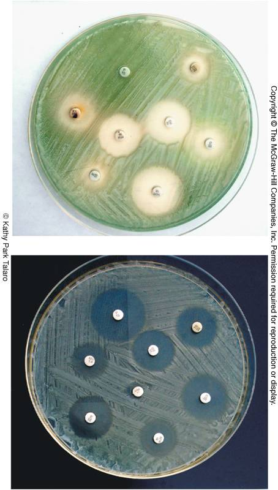
Her words and the slide differ; the slide wins. She said “very distinctive rotten grape odor” [part 3, 0:59]. The slide says grapelike odor; “rotten” is not on it. (She also said “yellow-green or blue-green”; Slide 18 names greenish-blue pyocyanin and Slide 14 lists yellow-green among the pseudomonad pigments, so both are on slides.)
The Pseudomonas-like opportunists Light touch
“And there were a number of other organisms that were similar to Pseudomonas that do these opportunistic infections, but don't worry about them so much. Okay, I'd rather know something about Pseudomonas aeruginosa.” [part 3, 1:22–1:36]
Burkholderia, Acinetobacter and Stenotrophomonas: similar to pseudomonads, obligate aerobes that do not ferment sugars, motile, oxidase positive, opportunistic pathogens. Lecture 14, Slide 21. They are on the syllabus list (item 2), so know that one line.
1.2 · Brucella and undulant fever Know it
“Brucella causes Brucellosis or undulant fever. And it's called undulant fever, if you recall, because the fever undulates. It comes, it goes, at kind of regular intervals.” [part 3, 1:36–1:58]
Tiny gram-negative coccobacilli; Brucella abortus (cattle) and Brucella suis (pigs). Brucellosis is also called Malta fever, undulant fever and Bang disease. A zoonosis: animal handling or slaughtering, contact with blood, urine and placentas of infected animals, or unpasteurized dairy products; human to human transmission is rare. Lecture 14, Slide 27.
It enters through damaged skin or mucous membranes; phagocytes carry it to the blood, with lesions in liver, spleen, bone marrow and kidneys. A severe febrile illness with a fluctuating pattern of fever, weeks to a year (undulant fever); chills, sweating, headache, muscle pain, weight loss. Tested with an agglutination titer; animal vaccine available. Lecture 14, Slide 28.
1.3 · Francisella tularensis and rabbit fever Know cold
“Francisella tularensis. What does this cause? Tularensis, but it's also commonly called rabbit fever. Why is it called rabbit fever? Because you can contract it from rabbits. So this you often get when you're dealing with, you're hunting wild rabbits and you have breaks in your skin.” [part 3, 1:58–2:34]
Tularemia, rabbit fever: a zoonotic disease of mammals endemic to the northern hemisphere, particularly rabbits. Transmitted by contact with infected animals, water and dust, or bites by vectors; incubation days to 3 weeks. Headache, backache, fever, chills, malaise and weakness; ulcerative skin lesions, swollen lymph nodes; sore throat, intestinal involvement and respiratory infection. 10% death rate in the systemic and pulmonic forms. Attenuated vaccine. Lecture 14, Slide 29.

Her aside, not on a slide. Hunting wild rabbits with breaks in the skin [part 3, 2:29–2:34] is her example; the slide gives the routes as contact with infected animals, water and dust, or vector bites.
1.4 · Bordetella pertussis and its two stages Know cold
“Bordetella pertussis. What does this cause? Pertussis, whooping cough, yes. And whooping cough, if you recall, it has two different stages. It has the catarrhal stage, which is basically just kind of like a cold. But then, what happens next?” [part 3, 2:34–3:06]
A minute, encapsulated coccobacillus causing pertussis (whooping cough), a communicable childhood affliction; often severe in babies; reservoir apparently healthy carriers; transmission by direct contact or inhaled aerosols. Lecture 14, Slide 30.
| Stage | What happens |
|---|---|
| Catarrhal | Nasal drainage, congestion, sneezing, occasional cough |
| Paroxysmal | Recurrent persistent cough, followed by deep inhalation — the whoop |
Toxins destroy and dislodge ciliated cells; loss of the ciliary mechanism builds up mucus and blocks the airway; complications come from compromised respiration. Vaccine DTaP (acellular, toxoid plus other antigens), 5 doses between 2 months and 6 years; Boostrix for ages 10–18. Lecture 14, Slide 31.

1.5 · Legionella: the water reservoir Know cold
“Legionella causes Legionnaires' disease. All right. And what's the reservoir of infection for Legionella? Water. This is the one that you are typically going to contract from standing water, like on the cooling towers of the hotels, you're breathing in the aerosols” [part 3, 3:38–4:09] … “particularly if they are smokers” [4:21] … “Or the vegetable sprayers.” [4:44]
Legionella pneumophila: weakly Gram-negative, motile, pleomorphic; cannot be easily cultured. Widely distributed in water: tap water, cooling towers, spas, ponds, air conditioning systems, supermarket vegetable spraying systems; lives in close association with amoebas. Lecture 14, Slide 39.
Transmitted by aerosols. Legionnaires disease and Pontiac fever; prevalent in males over 50; nosocomial; elderly patients with diabetes, cancer, transplants, chronic alcoholism or chronic lung disease, and smokers. Fever, cough, diarrhea, abdominal pain, pneumonia. Lecture 14, Slide 40. A Florida outbreak came from the spray of a decorative fountain. Lecture 14, Slide 42.
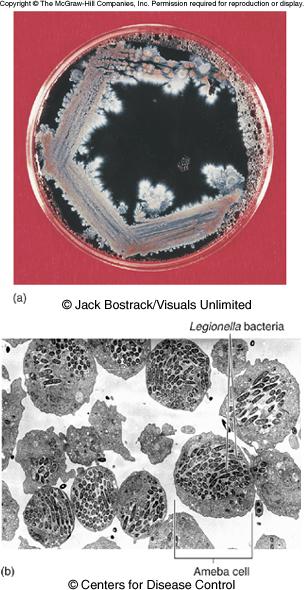
1.6 · Toxigenic versus invasive diarrheal disease Know cold
“There are two kinds of diarrheal diseases. What are they? One is the toxigenic and the other one is the invasive. … And what can be one characteristic symptom that is invasive as opposed to toxigenic? The diarrhea is bloody.” [part 3, 5:14–6:11]
The Enterobacteriaceae are the most frequent cause of diarrheal disease, by enterotoxins or by invasive infection. Lecture 14, Slide 43. The slide’s picture sets the two side by side: toxigenic, example ETEC (enterotoxigenic Escherichia coli); invasive, example Shigella. Lecture 14, Slide 44.

Bloody stool marks the invasive organisms in the deck: EIEC gives profuse bloody diarrhea with mechanical damage to the intestinal wall and no toxins Lecture 14, Slide 57; Shigella invades the villus of the large intestine and gives watery stool with blood. Lecture 14, Slide 78.
1.7 · Coliform versus non-coliform: lactose Know cold
“And how can you distinguish between the coliform enterobacteriaceae and the non-coliform enterobacteriaceae? In the lab, how do you distinguish them? We're looking at what carbohydrate can they or can't they ferment? Lactose. Okay. Remember, lactose fermenters, that's like E. coli. That's why we grew it on EMB and McConkie's.” [part 3, 6:20–7:13]
Enterics are facultative anaerobes; all ferment glucose, reduce nitrates to nitrites, are oxidase negative and catalase positive; coliforms are lactose fermenters, non-coliforms are non-lactose fermenters. Lecture 14, Slide 46.
| Medium | Selective for | Differential for |
|---|---|---|
| EMB (eosin and methylene blue) agar | Gram-negatives | Lactose fermenters |
| MacConkey’s agar (crystal violet and bile salts) | Gram-negatives | Lactose fermenters |
Lecture 14, Slide 48. Coliforms in normal flora: Escherichia coli, Enterobacter, Klebsiella, Hafnia, Citrobacter, Serratia. Non-coliforms: Proteus, Providencia, Morganella, Edwardsiella. Lecture 14, Slide 50. Salmonella and Shigella are non-coliform (lactose-negative) true pathogens. Lecture 14, Slide 69.


1.8 · The four Escherichia coli types Know cold
“The Escherichia coli types. Alright. We have four different E. coli types. ETEC, EIEC, EPEC, and EHEC. You need to know all four types and what they do.” [part 3, 7:13–7:45] … “But please review those four types of E. coli. I won't even tell you. There's multiple questions because it's important.” [8:33–8:51]
This is the strongest instruction in her whole review: “You need to know all four types and what they do” and “There’s multiple questions because it’s important.” Expect more than one question on these four rows.
| Type | What it does | Signature |
|---|---|---|
| ETEC — enterotoxigenic | Heat-labile (LT) and heat-stable (ST) toxins promote secretion of fluid and electrolytes in the intestinal epithelium: diarrhea, cramping, low-grade to no fever; fimbriae for adhesion to the small intestine Lecture 14, Slide 56. | 70% of traveler’s diarrhea; toxigenic |
| EIEC — enteroinvasive | Inflammatory disease of the large intestine, similar to shigellosis; adhesin proteins bind the intestinal wall; mechanical cell damage; no toxins; very young and very old most susceptible Lecture 14, Slide 57. | Profuse bloody diarrhea and high fever; invasive |
| EPEC — enteropathogenic | Adherence to the intestinal lining with destruction of microvilli; inhibits vitamin B1 (thiamin) uptake; prevention: breast feeding Lecture 14, Slide 58. | Wasting infantile diarrhea; greatest single cause of infant mortality worldwide |
| EHEC — enterohemorrhagic, O157:H7 | Diarrhea, hemorrhagic colitis and hemolytic uremic syndrome; Shiga toxin Lecture 14, Slide 59; reservoir the intestines of cattle; contaminated beef, water, vegetables Lecture 14, Slide 60. | Hemolytic uremic syndrome (item 1.9) |
The first letter after “Entero” is what it does: Toxin, Invades, Pediatric wasting (sticks to and destroys microvilli), Hemorrhage and hemolytic uremic syndrome.
1.9 · O157:H7 and hemolytic uremic syndrome Know cold
“What do we worry about with the O157H7? Why are we worried about that one? The enterohemorrhagic. … That's the one that can cause hemolytic uremic syndrome. … And what does that O157H7 even mean? What are we talking about? We're talking about surface antigens. It's how we identify them.” [part 3, 7:45–8:44]
O157 is the O (somatic) type antigen 157; H7 is the H (flagellar) type antigen 7. Lecture 14, Slide 59. The enteric surface antigens are H (flagellar), K (capsule and/or fimbrial) and O (somatic or cell wall; all have it). Lecture 14, Slide 52.
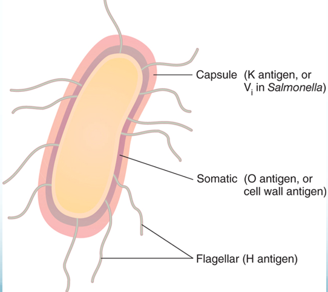
EHEC causes diarrhea, hemorrhagic colitis and hemolytic uremic syndrome; Shiga toxin binds ribosomes and disrupts protein synthesis, so endothelial cells detach, platelets meet the subendothelium and coagulation starts. Lecture 14, Slide 59. About 10% of cases develop hemolytic uremic syndrome — toxins produce apoptosis of renal tubular epithelial cells, and coagulation. Reservoir: the intestines of cattle; infectious dose 100 cells. Lecture 14, Slide 60. Treatment includes dialysis, transfusions and plasmapheresis; antibiotic therapy may exacerbate hemolytic uremic syndrome. Lecture 14, Slide 63. On rainbow agar O157:H7 colonies are black (glucuronidase negative). Lecture 14, Slide 64.
1.10 · Proteus: swarming Know cold
“Then when we have the ones which do not ferment lactose, like Proteus. Proteus, which we see as an agent of urinary tract infections. If we are growing Proteus on a plate of auger, what's it going to do? It, remember, is highly motile, so it swarms the plate.” [part 3, 8:51–9:34]
A non-coliform (lactose-negative) opportunist. Lecture 14, Slide 69. Proteus: urinary tract infection, wound infections, pneumonia, septicemia and infant diarrhea; nosocomial; related to bladder and kidney stones; highly motile. Lecture 14, Slide 70. Diagnostic growth pattern: the wavelike, swarming pattern of Proteus vulgaris, with peritrichous flagella. Lecture 14, Slide 71.

1.11 · Salmonella Typhi and the carrier Know cold
“We have salmonella typhi causes typhoid fever. Okay. Now, typhoid fever, we worry about that one because there are many individuals who are asymptomatic. Remember Typhoid Mary? … But where does the organism like to go hide? … It's in her gallbladder. … But it gets released with the bile, so it's in every bowel movement.” [part 3, 9:34–10:36]
Salmonella typhi and S. paratyphi cause typhoid and paratyphoid fever; humans are the exclusive hosts; resistant to bile and dyes; enters with fecally contaminated food or water. Asymptomatic carriers; some chronic carriers shed bacilli from the gallbladder. Lecture 14, Slide 73. The bacilli adhere to the small intestine and cause invasive diarrhea that leads to septicemia; sustained fever of 103–104 degrees, a rash of rose-colored spots; two vaccines give temporary protection. Lecture 14, Slide 74.
Her aside, not on a slide. Typhoid Mary and the bile carrying the organism “in every bowel movement” [part 3, 10:00–10:36] are her illustration; the slide’s fact is that some chronic carriers shed bacilli from the gallbladder.

1.12 · The other salmonelloses Know it
“And then we have the other salmonelloses, which are primarily gastrointestinal problems. We can get those from things like improperly cooked chicken, contaminate eggs, your pet turtles, your backyard chickens.” [part 3, 10:42–11:09]
Salmonelloses other than typhoid are enteric fevers, Salmonella food poisoning and gastroenteritis; less severe than typhoid but more prevalent. All zoonotic in origin. Acquired by ingestion: cattle, poultry and eggs, rodents, reptiles (pet turtles), animal and dairy products; fomites contaminated with animal intestinal flora. Gastroenteritis: vomiting, diarrhea, fluid loss. Lecture 14, Slide 76. Animal-borne sources on the next slide: backyard flocks, small turtles, bearded dragons. Lecture 14, Slide 77.
1.13 · Shigella: invasive and bloody Know it
“And then we have Shigella. And Shigella is a GI organism, which is an invasive GI organism, because that one has a characteristic bloody diarrhea.” [part 3, 11:15–11:29]
Shigellosis is an incapacitating dysentery: abdominal cramps and watery stool with blood; 2–7% also cause hemolytic uremic syndrome. Transmitted by ingesting fecally contaminated food. It invades the villus of the large intestine, does not perforate the intestine or invade the blood; endotoxin initiates fever; enterotoxin damages mucosa and villi — bleeding and mucus secretion. Lecture 14, Slide 78. It is the slide’s example of invasive diarrheal disease. Lecture 14, Slide 44.
1.14 · Yersinia pestis and the three plagues Know cold
“Then we have Yersinia pestis. What does Yersinia pestis cause? Plague … You can get bubonic plague. And typically, how do you acquire bubonic plague? From the flea, from a rat flea. … And it can form the buboes, the grossly enlarged lymph nodes. But it can also cause subcutaneous hemorrhaging, which is why it was also called what? The black death. And what is the most serious form of plague? The pneumonic form. And that is the one which can be directly transmitted from person to person.” [part 3, 11:45–12:55]
A tiny gram-negative rod with unusual bipolar staining and capsules. Lecture 14, Slide 81. Flea vectors: the bacteria replicate in the flea’s gut, coagulase clots blood and blocks its esophagus, the ravenous flea bites more hosts and regurgitated material transmits the bacterium. Found in 200 species of mammals (rodents). Lecture 14, Slide 83.
| Form | Slide |
|---|---|
| Bubonic | Bacillus multiplies in the flea bite, enters lymph, causes necrosis and swelling called a bubo in groin or axilla |
| Septicemic | Massive bacterial growth; intravascular coagulation, subcutaneous hemorrhage and purpura degenerating into necrosis and gangrene — black plague |
| Pneumonic | Localized to the lungs, highly contagious by aerosol, fatal without treatment |
Lecture 14, Slide 88.
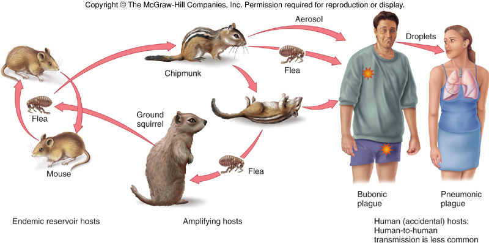
Her words and the slide differ; the slide wins. She tied the subcutaneous hemorrhaging to “the black death” [part 3, 12:29–12:40]. Slide 88 calls that septicemic form black plague; “Black Death” on Slide 94 is the 1346–1350 pandemic. Use the slide’s words.
Her words and the slide differ; the slide wins. She said the pneumonic form “can be directly transmitted from person to person” [part 3, 12:51–12:55]. Slide 88 says it is highly contagious by aerosol and fatal without treatment; Slide 83 says plague caught from infected humans is rare. Her “rat flea” [12:12] is the slides’ flea vector of rodents. {c14('83')}
1.15 · Haemophilus Know cold
“Hemophilus. What can hemophilus do? It doesn't cause influenza, even though it's named inappropriately. But it can cause a meningitis. It can cause chancery. We do have vaccinations against this one.” [part 3, 13:10–13:34]
Tiny gram-negative pleomorphic rods (“blood loving”); fastidious; none grow on blood agar without special techniques — chocolate agar; require hemin, NAD or NADP. Lecture 14, Slide 97.
| Species | Disease |
|---|---|
| H. influenzae | Misnamed as the cause of flu; acute bacterial meningitis, epiglottitis, otitis media, sinusitis, pneumonia, bronchitis; vaccine: subunit Hib Lecture 14, Slide 98. |
| H. ducreyi | Chancroid, a sexually transmitted disease; primarily tropics, primarily males Lecture 14, Slide 100. |
| H. aegyptius | Conjunctivitis (pink eye), primarily children Lecture 14, Slide 100. |
Two slides disagree. Slide 97 says “others (H. parainfluenzae, H. ducreyi) are virulent species responsible for childhood meningitis, and chancroid”; Slide 100 gives H. parainfluenzae as normal oral and nasopharyngeal flora that can cause infective endocarditis, and Slide 98 gives meningitis to H. influenzae. Safe pairing: meningitis → H. influenzae (Hib vaccine); chancroid → H. ducreyi.
1.16 · Endotoxin: the weapon they all have Know cold
“Now, what do all of our gram-negative bacilli have as an offensive weapon? … How about endotoxin? Endotoxin. All gram-negatives have endotoxin. And where do they get endotoxin? It is part of the outer membrane of the gram-negative cell wall. And remember, it is released when the organism dies. That's why if you're being treated with antibiotics, then you may feel worse before you feel better. Because mild release just causes very general symptomology, like fever, aches, pains, malaise. But if you get a real heavy dose of it, it can actually cause a septic shock.” [part 3, 13:44–14:59]
Endotoxin is a structural component of the Gram-negative outer membrane; chemically a lipopolysaccharide; lipid A is the biologically active component. It is released on lysis of Gram-negative cells, including through antibiotic therapy, and as cells grow and divide, particularly when rapidly proliferating. Lecture 14, Slide 5. All the aerobic Gram-negative nonenteric bacilli use endotoxin as one of their offensive weapons. Lecture 14, Slide 13.

Low levels give a low-level inflammatory response — fever, malaise, aches, pains. A large flood releases mediators that contribute to septic shock: TNF (tumor necrosis factor) and IL-1 (interleukin 1) drive neutrophil-endothelial adhesion and clotting, intravascular microthrombi, “warm shock” first, then falling cardiac output and blood pressure, tissue hypoxia and multisystem organ failure. Lecture 14, Slide 11.
Her words and the slide differ; the slide wins. She said it “is released when the organism dies” [part 3, 14:28]. True, and the slide adds a second release: as the bacteria grow and divide, particularly when rapidly proliferating. Know both.
2 · Lecture 17 — Parasites of Medical Importance
Instructional objectives — Parasites of Medical Importance
- Compare and contrast the morphology, medium, laboratory tests, biochemical reactions, diseases, clinical manifestations, methods of treatment, and prevention of parasites of medical importance.
- Describe the modes of transmission by which humans acquire parasites of medical importance.
Organism by organism again, protozoa then worms, with the picture warning at the start. The pictures beside each organism are the deck’s.
2.1 · Entamoeba histolytica; cyst and trophozoite Know cold
“Entamoeba histolytica causes anemic dysentery. And in many of these, we have two different forms of the protozoan parasite. What are the two different forms of the protozoan parasite that you could have? ASSIST, and what's the other one called? Atrophozoite. And what does that mean? … It's the one that is actively moving and feeding.” [part 3, 15:23–15:57] (The transcript’s “anemic” is “amebic”, and “ASSIST … Atrophozoite” is “a cyst … a trophozoite”.)
The two forms. Most protozoa propagate by asexual division of the active feeding cell, the trophozoite; many also form a cyst. Lecture 17, Slide 12. Entamoeba histolytica alternates between a large trophozoite, motile by pseudopods, and a smaller nonmotile cyst. Lecture 17, Slide 16.

The disease. Humans are the primary hosts; it is ingested. Lecture 17, Slide 16. Swallowed cysts reach the small intestine, where alkaline pH and digestive juices release 4 trophozoites, which attach, multiply, move and feed; asymptomatic in 90%. Lecture 17, Slide 19. Intestinal amebiasis targets cecum, appendix, colon and rectum: the ameba dissolves tissue, causing dysentery, abdominal pain, fever, diarrhea and weight loss. Lecture 17, Slide 20. Extraintestinal: most commonly liver abscesses (amebic hepatitis), also lungs and other organs. Lecture 17, Slide 21. Diagnosis: fecal smear; ELISA with monoclonal antibodies. Lecture 17, Slide 23.
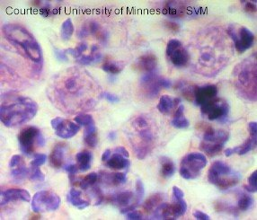
2.2 · Naegleria fowleri and Acanthamoeba Know cold
“Now, nigleria fowleri is also one of our infective amoebas. Why do we worry about this one? This is the one which you get by getting water up your nose, burrowing into the brain. And if you do not treat it within the first few days, it is almost invariably fatal. And we worry about this one, because we've got a lot of it here in Florida. Pretty much any of the little ponds, little lakes, fresh water. Acanthoepa caudicosa is the same thing, only a longer incubation time.” [part 3, 16:10–16:59]
Amebic meningoencephalitis is caused by Naegleria fowleri and Acanthamoeba, which inhabit standing water with a high bacterial count: hot springs, lakes, streams, unchlorinated swimming pools. Lecture 17, Slide 24. Naegleria is acquired through nasal contact with water — diving, waterskiing, jet skiing, rinsing sinuses even with tap water; most cases are children and young adults. Lecture 17, Slide 28.
Primary acute meningoencephalitis: the trophozoite burrows through the nasal mucosa and travels into the brain through the olfactory nerve; headache, fever, vomiting, stiff neck; rapid destruction of brain and spinal cord; coma, death in 3–7 days. Over 46% of lakes in Florida have N. fowleri. Treatment must be early. Lecture 17, Slide 29.
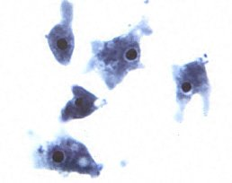
Acanthamoeba: freshwater lakes, hot tubs, pools; amebic keratitis in contact lens wearers; granulomatous amebic encephalitis — enters through a break in the skin or the nasal passages, meningitis symptoms but a longer progression; survival only 2–3%. Lecture 17, Slide 31.
Her words and the slide differ; the slide wins. She said Acanthamoeba is “the same thing, only a longer incubation time” [part 3, 16:56–16:59]; the slide says meningitis symptoms with a longer progression, and gives no incubation time.
2.3 · Balantidium coli, the ciliate Light touch
“Ballantinium coli is our ciliate. But unless you're working near a pig farm, I wouldn't worry about that one too much.” [part 3, 17:05–17:13]
One line to carry: the intestinal ciliate, an occupant of the intestines of domestic animals such as pigs and cattle; acquired by ingesting cyst-containing food or water. Lecture 17, Slide 33.
2.4 · Giardia lamblia Know cold
“Giardia lamblia. How do you acquire Giardia lamblia? This is the one that you'll get if you're camping and you are not drinking decontaminated water … You get the cyst form, which will then grow into the trophozoite form. So you end up with gastrointestinal symptomology.” [part 3, 17:17–17:47]
A pathogenic flagellate with a unique symmetrical heart shape and a concave ventral surface that acts like a suction cup; cysts small, compact, multinucleate. Reservoirs include beavers, cattle, coyotes, cats and humans; cysts survive 2 months; usually ingested with water and food; infective dose 10–100 cysts. Lecture 17, Slide 39. Cysts enter the duodenum, germinate, travel to the jejunum to feed and multiply; giardiasis is diarrhea and abdominal pain. Microscopy is difficult because shedding is intermittent; PCR. Killed by boiling, ozone and iodine. Lecture 17, Slide 41.
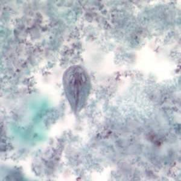

Her aside, not on a slide. Camping and the “beautifully nice, clear-looking stream” [part 3, 17:23–17:35] are her example; the slide’s fact is ingestion with water and food, with beavers among the reservoirs.
2.5 · Trichomonas vaginalis Know cold
“Trichomonas vaginalis. Why do we worry about this one? Very common STD. It is a flagellate. … And how will you diagnose this baby? You will look at secretions. You will look at vaginal secretions, or semen. … These little guys swimming around. And I know I gave you a picture on that one too.” [part 3, 18:03–18:37]
Trichomonads are small, pear-shaped, with 4 anterior flagella and an undulating membrane; they exist only in trophozoite form — no cyst. Lecture 17, Slide 36. T. vaginalis causes trichomoniasis, the most common curable sexually transmitted disease in young, sexually active women; reservoir the human urogenital tract; 60–70% asymptomatic; women: foul-smelling green-to-yellow discharge, vulvitis, cervicitis; men: urethritis, thin milky discharge. Lecture 17, Slide 37. Diagnosis by microscopic analysis of a vaginal smear; treated with metronidazole and tinidazole. Lecture 17, Slide 38.
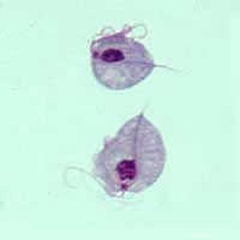
Her aside, not on a slide. She added semen [part 3, 18:27]; the slide names only the vaginal smear.
2.6 · Trypanosoma brucei gambiense and sleeping sickness Know it
“Then we have other flagellates, trypanosoma. These are blood flagellates. And we will diagnose those by actually seeing those little flagellates swimming around in a blood smear. They are transmitted by insect vectors, trypanosoma brucei gambiense, African sleeping sickness, transmitted by the bite of the tsetse fly. … If not treated, the African sleeping sickness organism can ultimately cause coma and death.” [part 3, 18:44–19:46]
Hemoflagellates are obligate blood and tissue parasites spread by blood-sucking insects. Lecture 17, Slide 42. T. brucei causes African sleeping sickness; T. cruzi Chagas disease. Lecture 17, Slide 44. T. brucei is spread by tsetse flies; T. b. gambiense is the Gambian strain (West Africa), T. b. rhodesiense the Rhodesian (East Africa). Lecture 17, Slide 45. The bite inoculates trypomastigotes (primary chancre); they disseminate in blood and damage spleen, lymph nodes and brain; the Gambian form is chronic with brain symptoms years later. Lecture 17, Slide 46. Progression to sleep disturbances, tremors, seizures, paralysis and coma; trypanosomes are readily demonstrated in blood, spinal fluid or lymph nodes. Lecture 17, Slide 47.

2.7 · Trypanosoma cruzi and Chagas disease Know cold
“The other trypanosoma, trypanosoma cruzi, causes what? Chagas disease. And what is the vector for that one? That one is the reduva beetle or kissing bug … And when it bites you, it defecates and you scratch the bite right and inoculate yourself. … Warming has caused the range of the reduva beetle to come up into our area. … And it can cause cardiac problems.” [part 3, 19:52–20:53]
T. cruzi causes Chagas disease (American trypanosomiasis); millions of cases in Latin America, becoming more of an issue in the southern United States through vector migration (three asterisks on the slide); now considered by many to be endemic in the United States. Lecture 17, Slide 48. The reduviid bug (kissing bug) is the vector; infection occurs when bug feces is inoculated into a cutaneous portal; also congenital, transfusion, transplant and foodborne routes. Romaña sign (chagoma, a swelling of the eyelid with conjunctivitis); heart muscle and large intestine harbor amastigotes; chronic inflammation of heart and brain (30–40% of heart disease in endemic regions). Lecture 17, Slide 49.

Her words and the slide differ; the slide wins. She said “reduva beetle”; the slide’s vector is the reduviid bug (kissing bug).
2.8 · Leishmania Know it
“Lishmatii, this is the one that is transmitted by the sand fleas, alternate host the dog, causes things like kala azar.” [part 3, 20:53–21:18]
Leishmaniasis is a zoonosis transmitted among mammalian hosts by female sand flies that need a blood meal to produce eggs; endemic to equatorial regions; alternate hosts dogs. Promastigotes are injected with the bite and convert to amastigotes. Lecture 17, Slide 52. Forms: cutaneous (oriental sore, Baghdad boil), espundia (skin and mucous membranes of the head), systemic visceral — kala azar is the most severe and fatal form if untreated. Lecture 17, Slide 53.
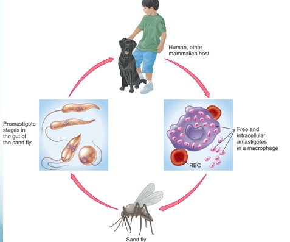
Her words and the slide differ; the slide wins. She said “sand fleas”; the slide says sand flies (female). Fleas carry plague and murine typhus (Slide 130).
2.9 · Plasmodium and malaria Know cold
“Plasmonium, what does it cause? Malaria. And plasmonium is transmitted by what arthropod vector? The anopheles mosquito. … goes into what organ first? Goes into your liver … and then cells are released from the liver to go into your blood cells. … It's like a little ring inside, a ring formation inside red blood cells that you should be able to recognize. … And what do you have when you have those bursts of the red blood cell? That's when you have fever and chills. And it happens at regular intervals” [part 3, 21:18–22:49]
The female Anopheles mosquito is the primary vector (also blood transfusion, mother to fetus); four species, P. malariae, P. vivax, P. falciparum, P. ovale. Lecture 17, Slide 56. The mosquito injects sporozoites, which localize in the liver and undergo schizogony; merozoites enter the circulation in 5–16 days (exoerythrocytic phase), enter red blood cells and convert to circular ring trophozoites; the red cell bursts, releasing merozoites (erythrocytic phase). Lecture 17, Slide 58. Regular episodes of chills, fever and sweating; symptoms at 48–72 hour intervals as red blood cells rupture; P. falciparum is the most malignant; diagnosis by the trophozoite in red blood cells. Lecture 17, Slide 60.
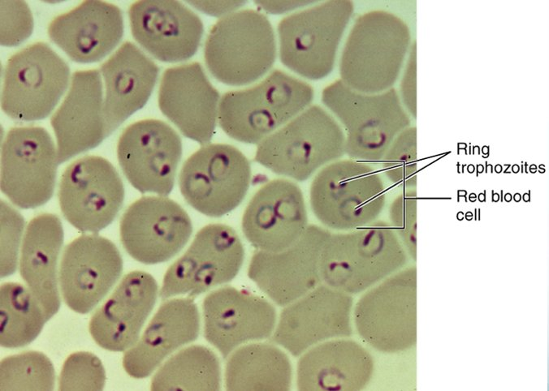

Her words and the slide differ; the slide wins. She said “It does not have a trophozoite form” [part 3, 21:33]. The slides say the opposite: merozoites “convert to circular ring trophozoites” in red cells {c17('58')}, and diagnosis is “by presence of trophozoite in RBCs” {c17('60')}. The ring she told you to recognize is the trophozoite. (The protozoan the slides give “only in trophozoite form — no cyst” is Trichomonas, {c17('36')})
2.10 · Toxoplasma gondii Know cold
“Then we have toxoplasma gondii, which causes toxoplasmosis. How do you get that one? From your cat, yeah. … And why are we worried about that one? Particularly for what group? Pregnant women because they can transmit it to their baby and it can be fatal.” [part 3, 22:54–23:26]
Lives naturally in cats, which harbor oocysts in the gastrointestinal tract and release them in feces; acquired by ingesting raw meats or substances contaminated by cat feces; most cases mild; serious in the immunocompromised (toxoplasma encephalitis). Lecture 17, Slide 64. Transplacental transmission to the fetus (33% chance) can result in spontaneous abortion, stillbirth, or severe neurological and ocular disease in the newborn — hydrocephalus, intracranial calcifications, chorioretinitis. Lecture 17, Slide 65.
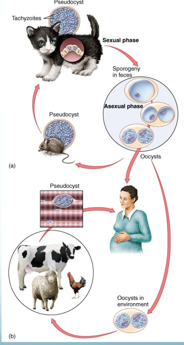
2.11 · Cryptosporidium and Cyclospora Know cold
“Cryptosporidium. How do you get this one? Contaminated food or water. I wouldn't worry too much about isospora, but cyclospora you should know.” [part 3, 23:26–23:45]
Cryptosporidium: an intestinal pathogen of mammals, birds and reptiles with tissue and oocyst phases; infectious dose as little as 10 organisms; acquired from recreational water or contaminated water, ice and foodstuffs; tolerates chlorine in swimming pools. Lecture 17, Slide 72. Gastroenteritis; chronic persistent diarrhea in AIDS (acquired immunodeficiency syndrome) and other immunocompromised patients; few effective drugs; leading cause of recreational waterborne disease. Lecture 17, Slide 73.
Cyclospora cayetanensis: an emerging protozoan; oral-fecal transmission, fresh produce and water; oocysts invade the small-intestinal mucosa; watery diarrhea, cramps, bloating, fever; diagnosis needs multiple stool samples. Lecture 17, Slide 75. A 2026 outbreak was linked to iceberg lettuce; seen in a fecal smear with acid-fast stain. Lecture 17, Slide 76.

Isospora belli Light touch
“I wouldn’t worry too much about isospora.” One line: intracellular intestinal parasite with an oocyst stage, in fecally contaminated food or drink, mainly in immunocompromised hosts. Lecture 17, Slide 74.
2.12 · What damage worms do Know cold
“What kind of symptoms can worm infections give us? Think about their life cycle. … they migrate through your body. … And so as they are migrating through your tissues, what are they doing? They're feeding on you. They are causing damage to the tissues … Some of them have direct toxic substances that they produce. … they can cause blockages … like the tapeworms, they can hook onto your intestines and they can absorb all your nutrients. So you should know what damage worms can do.” [part 3, 23:54–25:24]
The slide answers her question in three lines. Pathology arises from worms feeding on and migrating through tissues; accumulation of worms in organs, causing blockages; toxic worm secretions. Effects: enlargement and swelling of organs, hemorrhage, weight loss, anemia. Lecture 17, Slide 85.
The migration she described is life cycle A: larvae hatch and burrow through tissue, may go to the lungs and then the pharynx and are swallowed, and complete the cycle in the intestine. Lecture 17, Slide 80. Tapeworms have no mouth; nutrients are absorbed through the body, and a scolex grips the intestine. Lecture 17, Slide 118. Defense against worms is eosinophils; diagnosis by eosinophilia, serology, and eggs, larvae or worms in feces, sputum, urine, blood or tissue. Lecture 17, Slide 86.
2.13 · Enterobius vermicularis, the pinworm Know cold
“Enterobius vermiculares. What did that do? Which one is that? It's the scourge of the daycare center. That's the pinworm, right? With the scotch pig test” [part 3, 25:38–25:58] (“scotch tape test”)
Pinworm or seatworm; enterobiasis is the most common worm disease of children in temperate zones (starred on the slide). Eggs are picked up from surroundings and swallowed; adults develop in the intestine; anal itching when females emerge to release eggs; self-inoculation is common; tape test. Lecture 17, Slide 94.
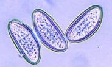
2.14 · Trichinella spiralis Know cold
“Trichinellis spiralis. What does that one do? … Where do you get that one? By eating undercooked pork. Because you are eating the insisted form in the muscle of the pig … And then it goes into your gut, multiplies, and then it wants to go find some more muscle to insist in. And causes damage to skeletal muscle, but also smooth muscle. Could go to the cardiac muscle, right?” [part 3, 25:51–26:34]
Life cycle entirely within mammals; life cycle C. Acquired from eating undercooked pork or bear meat. Larvae migrate from the intestine to blood vessels, muscle, heart and brain, where they form cysts. First symptoms flulike, diarrhea; second, muscle and joint pain, shortness of breath, pronounced eosinophilia; no cure after the larvae have encysted; occasional myocarditis. Lecture 17, Slide 101. Cycle C: a human consumes an encysted worm in undercooked meat; gastric passage releases the larva from the cyst. Lecture 17, Slide 82.
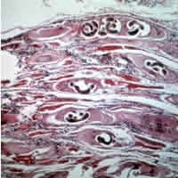
Her aside, not on a slide. “Smooth muscle” [part 3, 26:31] is not on the slide, which names muscle, heart and brain.
2.15 · Loa loa and Toxocara Know it
“We have the loa loa worm. Loa loa is what kind of worm? It's the eye worm. … So for each of these, you could kind of chug a little phrase to what they do. I'm not going to ask you a picky detail” [part 3, 26:42–27:10] … “The toxic hair, canis and cateye we get from our, from our dogs and cats.” [27:40–27:48]
Loa loa, the African eye worm: spread by the bite of small flies; life cycle D; a temperature-sensitive worm that migrates around and under the skin and may enter the eye; pulled from a small hole in the conjunctiva. Lecture 17, Slide 107.

Toxocara canis and T. cati, dog and cat roundworms: humans are accidental hosts, infected by ingesting eggs from feces or undercooked meat of a transport host; larvae migrate; ocular toxocariasis can blind; visceral toxocariasis damages the liver. Lecture 17, Slide 108.
Her own method, “a little phrase to what they do”: pinworm — daycare, tape test; Trichinella — undercooked pork, cysts in muscle; Loa loa — eye worm; Toxocara — dogs and cats; Schistosoma — snail, blood fluke; Opisthorchis — Chinese liver fluke, fish; Taenia — beef and pork, cysticercosis.
2.16 · Schistosoma and Opisthorchis Know it
“Schistosoma. This is the one that's schistosomiasis. This is the one with the complex life cycle, where the alternate host is the snail in the water, okay? It's a blood fluke … That's why we don't put our hands in the water where the snails live.” [part 3, 27:14–27:33] … “Apisicorcus sinensis, that's the Chinese liver fluke. This is why you do not eat fresh water sushi.” [27:48–27:53]
Blood flukes, schistosomes: life cycle D; adults in humans release eggs into water; the miracidium develops in a freshwater snail into a cercaria, which penetrates human skin, matures in the liver; adults migrate to intestine or bladder, feed on blood and shed eggs in urine and feces. Lecture 17, Slide 112. Prevention: snail control. Lecture 17, Slide 113.

Opisthorchis (Clonorchis) sinensis, the Chinese liver fluke: cycles between mammals, snails and fish; humans are infected by eating inadequately cooked fish containing cercariae; larvae crawl into the bile duct. Lecture 17, Slide 116.
2.17 · Taenia and Echinococcus Know it
“And then we have our tapeworms. Tenia saginata, tenia solium, we're eating undercooked beef and pork. And solium can also give you the cysticercosis, little brain worms … And then the echinococcus, which is the little tiny worm.” [part 3, 28:03–28:34]
Taenia saginata, beef tapeworm: infection from eating raw beef with the encysted larva; few symptoms; proglottids in stool. Lecture 17, Slide 119. Taenia solium, pork tapeworm: taeniasis if you ingest contaminated meat; cysticercosis if you ingest embryonated eggs — larvae migrate to all tissues and encyst, most damaging in heart, eye or brain (seizures, psychiatric disturbances). Lecture 17, Slide 121.

Echinococcus: tiny tapeworms; cystic echinococcosis (hydatid disease), a 2–7 mm tapeworm of dogs, slowly enlarging cysts in liver and lungs Lecture 17, Slide 124; acquired from handling infected dogs; treatment often surgical removal of the masses. Lecture 17, Slide 125.
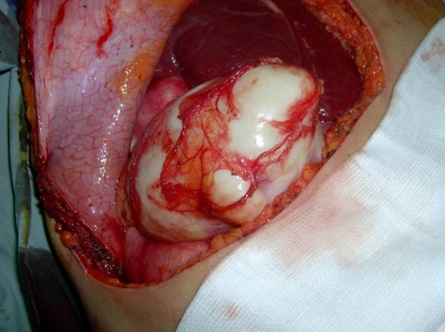
2.18 · Why so few drugs for parasites Know cold
“Why don't we have as many drugs for all of these parasites as we do for bacteria? Because they're eukaryotic, and so we have a lot of a lot of chances for toxic side effects.” [part 3, 28:34–28:52]
Antiprotozoan drugs are relatively few in comparison with antibacterial agents; they work against eukaryotic cells, so there are toxicity problems and severe side effects (both lines starred on the slide). Lecture 17, Slide 14. Likewise many antihelminthic drugs have toxic side effects; they target a worm metabolic process that differs from the human one. Lecture 17, Slide 86.
3 · Lecture 18 — DNA Viruses of Medical Importance
Instructional objectives — DNA Viruses that Infect Humans
- Recall the steps of DNA virus replication.
- Compare and contrast the characteristics of a lytic viral infection versus a persistent chronic or persistent latent infection.
- Differentiate between oncogenic and teratogenic viruses.
- Compare and contrast the morphology, medium, laboratory tests, biochemical reactions, diseases, clinical manifestations, methods of treatment, and prevention of DNA viruses of medical importance.
- Compare and contrast the mode of transmission, clinical manifestations, and availability of a vaccine for DNA viruses of medical importance.
She had taught this lecture that afternoon, so the review is a list of what to know [part 3, 29:00–32:07], which follows the objectives: replication (Objective 1), the three kinds of infection (Objective 2), oncogenic and teratogenic viruses (Objective 3), and the viruses themselves (Objectives 4 and 5). One item per thing she listed.
3.1 · Animal virus replication versus phage replication Know cold
“And what we talked about today, you should know the difference between animal virus replication and phage virus replication.” [part 3, 29:00–29:20]
| Phage (bacterial virus) | Animal virus | |
|---|---|---|
| Entry | Adsorption, then penetration: viral lysozyme and the tail pin breach the wall and inject the DNA Lecture 18, Slide 14. | Entire virion engulfed Lecture 18, Slide 22. |
| Uncoating | Not needed: only the DNA enters | Required to release the genetic material (pH of the cytoplasm against the extracellular fluid) Lecture 18, Slide 22. |
| Release | Lytic: viral lysozyme bursts the cell wall Lecture 18, Slide 14. | Budding, which may give the envelope Lecture 18, Slide 22. |
Phage replication methods: lytic, lysogenic and chronic (filamentous phages). Lecture 18, Slide 13. Lytic: adsorption, penetration, replication, assembly, maturation, release. Lecture 18, Slide 14. Lysogenic: the viral DNA integrates into the bacterial chromosome as a prophage; a shock induces a lytic cycle. Lecture 18, Slide 15. Chronic: filamentous phages are extruded without lysis, only slowing host growth. Lecture 18, Slide 16.


Steps for a DNA animal virus (papovavirus): attachment, entry and uncoating, early transcription, biosynthesis (DNA replicated), late translation of capsid proteins, maturation, release; note the necessity for uncoating and release by budding. Lecture 18, Slide 23. Most DNA viruses are budded off the nucleus. Lecture 18, Slide 24.

3.2 · Animal virus structure; where the envelope comes from Know cold
“Basic structure of the animal viruses. Where do they get that envelope?” [part 3, 29:20–29:33]
All viruses have a capsid, a protein coat enclosing the nucleic acid (helical, icosahedral, or complex as in phage); they contain DNA or RNA; animal viruses may have an envelope or spikes. The envelope is obtained during budding of the virus through the cell membrane, and helps evade the immune system. Lecture 18, Slide 9. Animal viruses are categorized by nucleic acid, capsid and presence or absence of an envelope. Lecture 18, Slide 8.
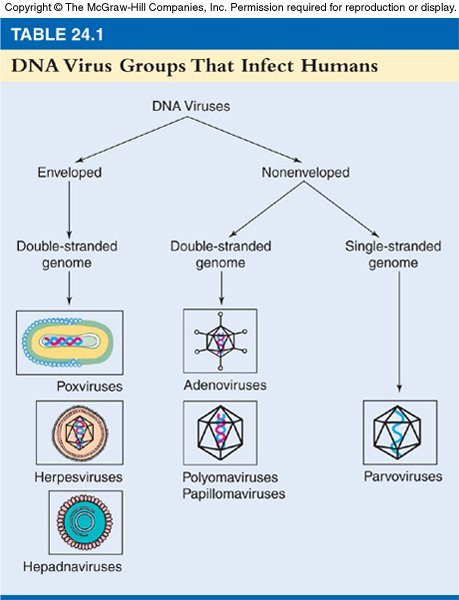

3.3 · Acute, persistent chronic and persistent latent infections Know cold
“Viral infections, examples of the acute viral infections. Examples of the persistent chronic viral infections. And the persistent latent viral infections.” [part 3, 29:33–29:58]
| Kind | What happens | Slide’s examples |
|---|---|---|
| Acute | Rapid course; lytic cycle | Colds, flu |
| Persistent chronic | Virus detectable in tissue, multiplying slowly; symptoms mild or absent; may integrate into the host chromosome | HIV, hepatitis B virus |
| Persistent latent | After a lytic cycle the virus goes dormant, generally not detectable, no symptoms; can reactivate as recurrent infection; viral DNA is an episome (in the nucleus, not integrated) | Herpesviruses |
Lecture 18, Slide 26. Note that the slides use hepatitis B as the chronic example, although most people infected show few symptoms and develop immunity Lecture 18, Slide 88; it is chronic in the small number who go on to chronic liver disease.

3.4 · Oncogenic viruses Know cold
“What is an oncogenic virus, and give an example of that.” [part 3, 29:58–30:03] … “Oncogenic viruses” [31:22]
Some persistent viruses are oncogenic: Lecture 18, Slide 28.
| Virus | Cancer |
|---|---|
| Epstein-Barr virus | Burkitt lymphoma |
| Herpesvirus 8 | Kaposi sarcoma |
| Hepatitis B virus | Hepatic carcinoma |
| Papillomaviruses | Cervical and penile cancer |

Adenoviruses are oncogenic in animals, not in humans Lecture 18, Slide 93; polyomaviruses induce tumors in experimental animals. Lecture 18, Slide 101.
Two slides disagree. Her chart’s herpes simplex 2 row says “Association with Cervical and Penile cancer; often diagnosed with Pap smear” {c18('5')}, while the oncogenic list gives cervical and penile cancer to the papillomaviruses {c18('28')}. Learn the Slide 28 pairing; an exam item will not hinge on the chart row.
3.5 · Teratogenic viruses Know cold
“What is a teratogenic virus, what is that?” [part 3, 30:03–30:11]
Several viruses can cross the placenta, causing developmental disturbances and permanent defects — teratogenic: rubella and cytomegalovirus. Lecture 18, Slide 28. Cytomegalovirus in newborns: enlarged liver and spleen, jaundice, capillary bleeding, microcephaly, ocular inflammation; survivors develop neurological sequelae, hearing and visual disturbances. Lecture 18, Slide 72.
Oncogenic causes cancer; teratogenic causes birth defects across the placenta. Other DNA viruses on the slides that harm the fetus or newborn: parvovirus B19 (hydrops fetalis) Lecture 18, Slide 104; herpes of the newborn (from the mother before or during birth). Lecture 18, Slide 64.
3.6 · The eight human herpesviruses Know cold
“What do all of those delightful little herpes viruses do? 1 through 8, OK, what do each one of them do, are they associated with?” [part 3, 30:11–30:25]
All herpesviruses show latency and cause recurrent infection (viral DNA forms an episome); large enveloped icosahedral double-stranded DNA; replicate within the nucleus. Lecture 18, Slide 55.
| Virus | Disease (Slide 57) | Transmission and other facts |
|---|---|---|
| HSV-1 (herpes simplex 1) | Fever blisters, cold sores | Oropharynx, early childhood Lecture 18, Slide 58; latent in the trigeminal ganglion Lecture 18, Slide 59; also gingivostomatitis, keratitis, whitlow Lecture 18, Slide 60. |
| HSV-2 (herpes simplex 2) | Genital infections | Ages 14–29; can spread without visible lesions Lecture 18, Slide 58; latent in lumbosacral ganglia Lecture 18, Slide 59. |
| VZV (varicella zoster virus) | Chickenpox and shingles | Item 3.10 |
| CMV (cytomegalovirus) | Infects salivary glands and viscera | Giant cells with inclusions; saliva, breast milk, urine, semen, transplants Lecture 18, Slide 71; teratogenic Lecture 18, Slide 28. |
| EBV (Epstein-Barr virus) | Lymphoid tissue — infectious mononucleosis | Saliva (“kissing disease”) Lecture 18, Slide 75; Burkitt lymphoma, nasopharyngeal carcinoma Lecture 18, Slide 77. |
| HHV-6 (human herpesvirus 6) | Roseola | Babies 2–12 months: fever, then a faint rash Lecture 18, Slide 81. |
| HHV-7 (human herpesvirus 7) | Roseola | Closely related to HHV-6 Lecture 18, Slide 83. |
| HHV-8 (human herpesvirus 8) | Kaposi sarcoma | Item 3.11 |
Lecture 18, Slide 57.
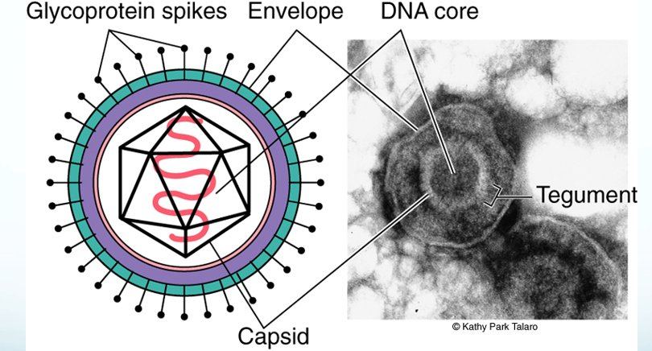
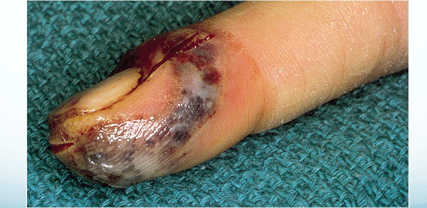
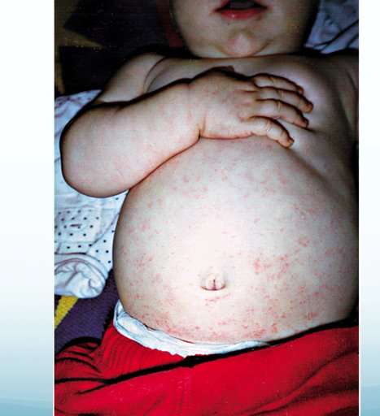
3.7 · What is unusual about poxvirus reproduction Know cold
“What's unusual about reproduction in the pox viruses? They're the great big guys. They reproduce in the cytoplasm and not the nucleus.” [part 3, 30:25–30:38]
Poxviruses: the largest and most complex animal viruses, the largest genome, double-stranded DNA, and they multiply in the cytoplasm in factory areas; eruptive pustules (pocks) that scar. Lecture 18, Slide 32. Compare: most DNA viruses are budded off the nucleus Lecture 18, Slide 24, and herpesviruses replicate within the nucleus. Lecture 18, Slide 55.

3.8 · Variola, smallpox Know it
“We talked about variola, the small pox virus, which is, theoretically speaking, the first virus to be eliminated by vaccination.” [part 3, 30:41–30:54]
Her chart: smallpox; transmission inhalation, direct contact, fomites; fever, malaise, prostration, rash, possible toxemia, shock; vaccine yes — with vaccinia; “first disease to be eliminated by vaccine; no more routine vaccination except for front line”. Lecture 18, Slide 4. Transmission: airborne saliva, material from pustules or scabs, fomites; the early rash (spots on tongue and mouth) is the stage of greatest contagion. Lecture 18, Slide 40. Contagious until all scabs have fallen off. Lecture 18, Slide 41. Prevention: vaccination with vaccinia virus, not routinely given since 1972. Lecture 18, Slide 43. Declared eradicated by the World Health Organization in 1980. Lecture 18, Slide 45.

3.9 · Mpox and its vaccine Know it
“We talked about the mpox virus, which is something that they're trying to wage war on right now, and even giving you, where do I find a vaccine against this one?” [part 3, 30:54–31:02]
Mpox (monkeypox): the virus enters through broken skin, the respiratory tract or mucous membranes, by contact with body fluids or fomites; fever, aches, chills, swollen lymph nodes; 1–3 days after fever a rash starting on the face, through macules, papules, vesicles, pustules and scabs; a 2–4 week illness. Lecture 18, Slide 48. Vaccination available, with a CDC (Centers for Disease Control and Prevention) vaccine locator tool: JYNNEOS, a 2-dose series 28 days apart; ACAM2000, approved against smallpox and made available to prevent monkeypox. Lecture 18, Slide 52. Jynneos is a smallpox and monkeypox vaccine. Lecture 18, Slide 44.
Two slides disagree. The chart says JYNNEOS “became available April 2024” {c18('4')}; Slide 44 says approved September 24, 2019. Know the vaccine’s name and dosing, not the date.
3.10 · Varicella zoster: when you are contagious Know cold
“Varicella zoster, the chicken pox shingles virus, when you are contagious with that one.” [part 3, 31:22–31:40]
Varicella zoster virus causes chickenpox and shingles; humans the only natural host; transmitted by respiratory droplets and contact with fluid from active lesions; most infectious 24–48 hours prior to the development of lesions; the virus enters neurons and stays latent. Lecture 18, Slide 68. Reactivation gives shingles, vesicles along a dermatome, more common in older patients; shingles patients can infect unvaccinated people, particularly children, who get chickenpox, not shingles; live attenuated vaccine for chickenpox and shingles. Lecture 18, Slide 69.

3.11 · The herpesvirus of Kaposi sarcoma Know cold
“Which herpes virus is associated with Kaposi sarcoma?” [part 3, 31:48–31:58]
Human herpesvirus 8, the Kaposi sarcoma-associated virus, is linked with the common tumor of AIDS patients; also possibly multiple myeloma, primary effusion lymphoma and some forms of Castleman disease. Kaposi sarcoma: small, painless, discolored lumps on the skin that may disseminate to internal organs. Lecture 18, Slide 83. Chart: saliva, sexual contact, blood transfusion, organ transplant; no vaccine. Lecture 18, Slide 6.
3.12 · Her chart: the other DNA viruses Know cold
“And again, for each of these, I've given you this chart to help clue you in on. If you can associate what the viruses are and what they do, you should be OK.” [part 3, 31:58–32:07]
The chart is Slides 4–7, under the instruction “For each of the viruses on the following tables, review disease states, modes of transmission, clinical manifestations, whether vaccines are available and any other pertinent information listed.” It is rebuilt here as text, row for row (spelling corrected). Lecture 18, Slides 4–7.
| Virus | Disease | Transmission | Clinical manifestations | Vaccine | Other |
|---|---|---|---|---|---|
| Variola | Smallpox | Inhalation, direct contact, fomites | Fever, malaise, prostration, rash, possible toxemia, shock | Yes — with vaccinia | First disease to be eliminated by vaccine; no more routine vaccination except for front line |
| Molluscum contagiosum | Molluscum contagiosum | Direct contact and fomites | Small, smooth waxy macules on genitals and thighs | No | Treatment typically by removal of individual lesions |
| Monkeypox | Monkeypox | Contact with infected animals or humans | Skin pocks, fever, swollen lymph nodes | Yes — JYNNEOS | Major outbreak US 2022–2023 |
| Vaccinia | Cowpox | Contact with infected animals (rarely humans) | Skin pocks typically on hands | Yes — used in Europe for animals | Also found in rodents, cats, zoo and circus animals |
| Herpes simplex 1 | Fever blisters, cold sores | Direct contact | Lesions near lips and genitals, herpetic gingivostomatitis, herpetic keratitis, encephalitis occasionally in neonates | No, but candidate vaccines in trials | |
| Herpes simplex 2 | Genital herpes | Direct contact | Anorexia, fever, bilateral groin swelling and tenderness; clusters of sensitive vesicles on genitalia, perineum and buttocks; urethritis, painful urination, cervicitis, itching; vesicles ulcerate | No, research ongoing | See the flag in item 3.4 |
| Herpes simplex 1 and 2 | Herpetic whitlow; herpes of the newborn | Direct contact; mother to child | Pain and swelling of a finger or thumb, blisters, red streaks; lesions on mouth, skin, eyes, central nervous system where potentially fatal | No | |
| Varicella zoster | Chickenpox, shingles | Respiratory droplets and contact with fluid from active skin lesions | Filled vesicles, malaise, fever; reactivation as shingles, painful vesicles along a dermatome | Yes, for both | Shingles is infectious to those never immunized — manifests as chickenpox |
| Cytomegalovirus | Retinitis, encephalitis, intestinal tract inflammation | Direct contact with infectious body fluids (saliva, blood, mucus, tears, breast milk, urine, semen, cervical secretions) or tissues | Blind spots; encephalitis; enlarged liver and spleen, jaundice, capillary bleeding; fetal microcephaly; survivors with neurological, hearing and visual damage | None currently; several in trials | Severe in neonates, fetuses, transplant patients, HIV and other immunocompromised hosts; owl’s eye inclusion |
| Epstein-Barr virus | Infectious mononucleosis; Burkitt lymphoma; nasopharyngeal carcinoma; chronic fatigue syndrome (possible link) | Direct oral contact or fomites contaminated with saliva | Sore throat, high fever, cervical lymphadenopathy, splenomegaly; Burkitt: swollen nodes, abdominal pain, night sweats; nasopharyngeal: neck lump, hearing loss, blocked nose | No preventive vaccine; therapeutic vaccines in trials for its cancers | Burkitt primarily African boys 5–7; nasopharyngeal cancer adults 30–60, family history, salt-cured foods |
| Human herpesvirus 6 | Roseola | Contact with saliva | Acute febrile disease followed by rash | None | Possible connection with multiple sclerosis and cancers |
| Human herpesvirus 7 | Roseola | Contact with saliva | Acute febrile disease followed by rash | None | Possible connection with multiple sclerosis and cancers |
| Human herpesvirus 8 | Kaposi sarcoma | Saliva, sexual contact, blood transfusion, organ transplant | Small painless discolored skin lumps; may affect internal organs | None | Castleman disease, primary effusion lymphoma |
| Hepatitis B | Hepatitis B | Contact with blood or serum, sexual contact | Malaise, fever, chills, anorexia, abdominal discomfort, diarrhea, jaundice, rash, arthritis | Yes | Cirrhosis and hepatic cancer; great risk to health care workers from a very low infective dose |
| Adenovirus | 50+ types: common cold, pharyngitis, conjunctivitis, cystitis, infantile gastroenteritis; some strains hepatitis in young children | Droplets from respiratory and ocular secretions; ingestion | Upper respiratory symptoms, congestion, cough, fever; gastrointestinal symptoms; hepatitis | Types 4 and 7, for military in training | |
| Human papillomavirus | Warts and genital warts | Direct contact including sexual, or fomites | Tiny flat bumps to branching cauliflower-like masses | Vaccines available for genital warts | Nine strains raise the risk of reproductive system cancers |
| Polyomaviruses (JC, BK) | JC: progressive multifocal leukoencephalopathy; BK: interstitial nephritis | Body fluids, contaminated food or water; JC early childhood, BK adolescence | JC: demyelination, progressive neurological symptoms; BK: after renal transplant, bloody urine | None for humans | Most prevalent in the immunosuppressed |
| Parvovirus B19 | Fifth disease; hydrops fetalis; polyarthropathy; cessation of red cell production | Droplet infection | Slapped-face rash, low-grade fever; fatal fetal anemia from maternal transmission; massive joint swelling; anemia |
The viruses on it she did not name in the review get their own line from the slides. One of them she had flagged earlier that afternoon, in the lecture itself:
“Three principal viruses associated with hepatitis, hepatitis B, which is the DNA virus, you need to know that one, and then Dr. Fair will talk to you about hepatitis A and C next week because they are RNA viruses.” [part 2, 35:10–35:25]
- Hepatitis B (enveloped, unusual partly double- and partly single-stranded genome, liver tropism Lecture 18, Slide 86): multiplies exclusively in the liver, seeding the blood — chronic; minute amounts of blood transmit it, also sexual; raises the risk of hepatocellular carcinoma Lecture 18, Slide 87; vaccine from yeast-cloned surface antigen, 3 doses; HBIG (hepatitis B immune globulin) for the exposed. Lecture 18, Slide 91.
- Adenovirus: nonenveloped double-stranded DNA, acute infection; respiratory and ocular secretions; colds, pharyngitis, conjunctivitis, hemorrhagic cystitis, infantile gastroenteritis Lecture 18, Slide 93; type 41 is associated with hepatitis in children 1–6; oral vaccine for types 4 and 7 in the military. Lecture 18, Slide 94. (The slide calls that vaccine “inactivated”; the current military adenovirus vaccine is a live oral vaccine. Answer from the slide if asked.)
- Human papillomavirus: warts (common, plantar, genital — the most common sexually transmitted disease in the United States) Lecture 18, Slide 97; nine types raise reproductive cancer risk; Pap smear; vaccines Gardasil and Cervarix. Lecture 18, Slide 99.
- Polyomaviruses: JC virus causes progressive multifocal leukoencephalopathy, destruction of myelin-producing cells in the immunosuppressed; BK virus lies dormant in the kidney and causes hemorrhagic cystitis and nephritis after renal transplant. Lecture 18, Slide 102.
- Parvovirus B19: nonenveloped single-stranded DNA Lecture 18, Slide 103; erythema infectiosum (fifth disease), fever and rash on the cheeks; hydrops fetalis if a pregnant woman passes it to the fetus. Lecture 18, Slide 104.
- Molluscum contagiosum: direct contact and fomites; in the United States most commonly a sexually transmitted disease; small, smooth waxy lesions. Lecture 18, Slide 46.
- Cowpox: rare in humans, usually on the hands; rodents are the main reservoir. Lecture 18, Slide 53.

What she said about the exam
The four E. coli types are the surest question. “You need to know all four types and what they do” and “there’s multiple questions because it’s important” [part 3, 7:41–8:51] are the most direct statements about the exam she made.
Parasites: identity, source, and the picture. “I’m not going to ask you a picky detail” [part 3, 27:08] — know each organism by “a little phrase to what they do”: its vector or source, its disease, and what it looks like.
DNA viruses: the list, then the chart. She taught it that afternoon and closed with a list of what to know — replication, structure and the envelope, the three kinds of infection, oncogenic and teratogenic viruses, the eight herpesviruses, poxviruses, smallpox and mpox, varicella zoster’s contagious period, Kaposi sarcoma — and pointed to her chart for the rest: “If you can associate what the viruses are and what they do, you should be OK.”
The review was one-sided by design. It says nothing about the weight of Dr. Fair’s Lectures 15, 16 and 19 on the exam.
Next steps: the full Exam 3 study guide covers the whole block, and the cram sheet condenses it. To test yourself on exactly this review, the two Webster Review master exams (Exam 2), 60 questions each, give every item above a question in each exam, with extra ones on the Know cold items and picture questions on the parasites.